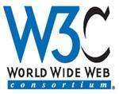

万维网联盟（World Wide Web Consortium，简称W3C）创建于1994年，是Web技术领域最具权威和影响力的国际中立性技术标准机构（W3C视频）。到目前为止，W3C已发布了200多项影响深远的Web技术标准及实施指南，如广为业界采用的超文本标记语言（HTML）、可扩展标记语言（XML）以及帮助残障人士有效获得Web内容的信息无障碍指南（WCAG）等，有效促进了Web技术的互相兼容，对互联网技术的发展和应用起到了基础性和根本性的支撑作用。
欢迎您联系W3C获得更多信息。万维网联盟由Web的发明者 Tim Berners-Lee及W3C的首席执行官 Jeffrey Jaffe领导，由设立在美国麻省理工大学（MIT）、欧洲数学与信息学研究联盟（ERCIM）、日本庆应大学（Keio University）和中国北京航空航天大学的四个全球总部（W3C Hosts）的全球团队联合运营。除四个总部外，W3C还在全球20个国家和地区设立了办事处机构（W3C Offices），并拥有来自各国政府、行业、标准化组织、科研机构等近400家会员单位，覆盖了IT及互联网、出版、电视与媒体、汽车、金融、航空等众多领域。
W3C会员及来自各类机构的邀请专家参与到W3C的各类工作组（Groups）编写W3C的Web标准。此外，更为广泛的开发者社区也在标准开发过程中扮演重要角色。个人和团队都有多种方式参与到W3C的各类活动中。
从管理角度，W3C由四个签署联合协议的总部机构（Host Institutions）共同运营，包括MIT，ERCIM，Keio University及北京航空航天大学。W3C团队的员工由W3C的Director和CEO直接领导。一个更小的管理团队(management team)负责日常运行。作为一个国际化的组织，W3C在不同地区设立了办事处机构（W3C Offices）。
从标准流程角度，W3C的标准流程（Process Document）、会员协议（Member Agreement）及专利策略（Patent Policy）约定了W3C参与各方的职责和利益。其中，W3C的一些主要机构包括顾问委员会（Advisory Committee）、Advisory Board、技术架构组（Technical Architecture Group, TAG）及各个工作组（chartered groups）。
万维网联盟（W3C）由Tim Berners Lee 于1994年在美国MIT设立。为了扩大Web技术的全球影响力，1995年W3C设立欧洲总部，1996年在日本设立W3C/Keio。中国早在1994年就有了第一个Web网站，并正式联入国际万维网；作为W3C全球办事处计划的一部分，2003年12月，在香港科技大学沈运申（Prof. Vincent Shen）的倡导下，W3C在香港科技大学设立办事处（HK Office）；2006年4月，W3C依托北京航空航天大学设立中国办事处（香港办事处也同步撤消），2013年1月，W3C在北京航空航天大学设立W3C/Beihang总部。2016年7月，W3C在北京举行研讨会，庆祝W3C中国十周年。
随着中国ICT产业的迅速发展，中国在全球Web技术领域的作用日益提升。在怀进鹏教授的发起下，北京航空航天大学于2006年4月设立了W3C中国办事处，与百度、华为、腾讯、中国移动等国内著名企业和科研院所开展了深入合作，有效促进了一系列新兴Web标准在国内的推广、普及和应用，得到了全球同行的高度评价。 2013年1月，W3C/北航总部正式设立， 北航成为我国历史上第一所建立国际知名技术和标准化组织总部机构的大学，对推动我国信息技术标准化的发展，对于我国ICT行业参与国际合作及竞争，抢占万维网技术制高点具有重要意义。W3C（北航）总部将与国内外相关学术届、产业界及广泛的Web开发社区一起，致力于构建更加开放的互联网技术平台，进一步推进全球互联网技术和标准的发展。
W3C的收入主要来自W3C会员费、政府及企业的研究经费支持、赞助与捐赠。 更多信息，请参阅W3C与其他标准组织的联系，W3C的历史，及关于W3C/Web的常见问题。